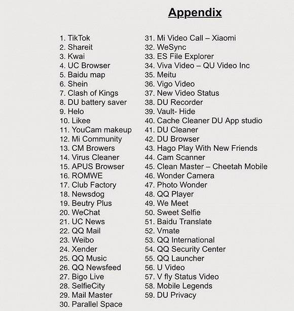
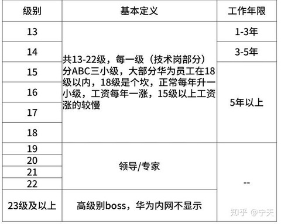

又到了每季度的“安全动态汇总”。
《WeChat（微信）Surveils International Accounts To Decide What To Censor for Chinese Users, Study Says @ Slashdot》
《微信监视所有用户的内容 @ Solidot》
《微信是否监听了你的聊天记录？ @ Solidot》
在这篇博文中，俺写了如下这段：
《Exclusive: Warning Over Chinese Mobile Giant Xiaomi Recording Millions Of People’s ‘Private’ Web And Phone Use @ Forbes/福布斯》
《小米被指记录用户的 Web 和手机使用数据 @ Solidot》
《Apple 'Suddenly Catches TikTok Secretly Spying On Millions Of iPhone Users', Claims Forbes @ Slashdot》
《TikTok 等 iOS 应用被指监视剪贴板内容 @ Solidot》
《Microsoft Edge 被指悄悄导入了 Firefox 数据 @ Solidot》
编程随想注：
在前不久（2020年5月）的博文中《聊聊“核战略的博弈模型”与“中美新冷战”》，俺已经提到了：
“冷战”区别于“热战”的关键之处——敌对各方【不】进行显式的军事冲突。在这种状态下，【网络战】成为一种很有效的手段。因为“网络战”的特点恰恰是【隐式】滴。
《中国电信等四家中国国企（运营商）可能会被赶出美国市场 @ VOA/美国之音》
《路透社：美国将华为海康等20家顶尖中企列入受军方支持名单 @ RFI/法广》
《美国 FCC 正式将华为、中兴列为“国家安全威胁” @ 网易财经》
《谷歌前总裁作客 BBC 节目，纵论华为“威胁”和中美科技脱钩的是非 @ BBC/英国广播公司》
《英国政策急转，今年或将逐步淘汰华为 5G 设备 @ 德国之声》
《限制华为 5G，法国称：这是主权问题 @ RFI/法广》
《印度宣布禁用59款中国应用，包括 TikTok 和微信等 @ 网易新闻》

（编程随想注：被印度查禁的天朝 app 清单）
《印度命令 ISP 屏蔽被禁止的中国应用 @ Solidot》
《印度限制中国电力设备进口，称可能存在特洛伊木马 @ 网易新闻》
“电力设备”已经成为“网络战”关注的重点。对于攻击者而言，可以通过“破坏电力基础设施”（比如变电站的软件系统）来瘫痪某个城市。这可不是俺的臆想，已经有先例。参见《近期安全动态和点评（2019年3季度）》一文的如下章节：
编程随想注：
上半年的全球疫情，导致很多企业和政府机构只能采用【远程视频】的方式开会。有一款名叫 Zoom 的远程视频软件很受欢迎。
虽然该公司的总部在美国，但其技术团队在天朝，公司老板也是华人，因此引发了很多国家的担忧。
《US Senate Tells Members To Stop Using Zoom @ Slashdot @ Slashdot》
《美国参议院建议参议员不要用 Zoom @ cnBeta》
《台湾政府禁止使用 Zoom 视频软件 @ VOA/美国之音》
《印度称 Zoom 不是视频会议的安全平台 @ Solidot》
《肺炎疫情——Zoom 远程会议软件到底有多安全 @ BBC/英国广播公司》
《Chinese Bank Required Two Western Companies to Use Tax Software With a Hidden Backdoor @ Slashdot》
《航天信息的智慧税务软件被指含有恶意程序 @ Solidot》
请注意：上述新闻中提及的税务软件，是应天朝国内银行的要求，强制安装滴；结果被老外查出有【安全后门】。
在新冷战的大环境下，各国都对天朝充满怀疑（敌意），这类新闻会进一步增加各国对天朝的猜忌。
后续更新——
本文发布之后不久，国外安全公司曝光了上述税务软件的另一个丑闻，参见俺在《近期安全动态和点评（2020年3季度）》的介绍。
《微软修补了三个正被利用的 0day 漏洞 @ Solidot》
关于“Adobe Type Manager Library”的高危漏洞，3月下旬已经曝光。这个漏洞非常危险！在上一期的《近期安全动态和点评（2020年1季度）》，俺介绍过该漏洞的原理和危险性。
《Researchers Say They Caught an iPhone Zero-Day Hack in the Wild @ Slashdot》
《iPhone 曝出“惊天漏洞”，波及全球超5亿部苹果手机 @ InfoQ》
这2个 iOS 漏洞都是“zero-day”漏洞（经常看俺博客的，应该都晓得“zero-day”为何意）。值得一提的是：其中一个漏洞是【zero-click】漏洞（其含义参见刚才那段洋文）。
看不懂洋文的，俺稍微解释一下：
大部分安全漏洞，都需要受害者执行某个操作——
比如攻击者要利用“浏览器漏洞”，通常需要先诱使受害者访问某个挂马的网站；
比如攻击者要利用“Word 的漏洞”，通常需要先诱使受害者打开某个嵌入恶意代码的 doc 文档；
（以此类推）
【zero-click】漏洞是指——【不】需要受害者进行任何操作，就可以直接触发攻击代码。这也就意味着——
其一，攻击者可以悄无声息地执行入侵（受害者根本没啥感觉）；
其二，因为【不】需要受害者参与互动，（相比那些需要互动的漏洞而言）用【zero-click】漏洞进行入侵的成功率非常高。
正是因为上述特点，【zero-click】漏洞非常值钱。比如说：如果两个漏洞都能够进行“本地提权”，各方面差不多，但一个是【zero-click】另一个不是。那么两者在黑市上的价格可能会相差一个数量级（或更多）。
《Adobe Acrobat Reader 安全漏洞允许恶意程序悄悄获得 macOS 的 root 权限 @ Solidot》
编程随想注：以下是事情经过
5月10日，华为在“Linux 内核加固邮件列表”上提交了一个补丁，名为 HKSP，全称是【huawei kernel self protection】。
（在 Linux 社区颇有名气的）PaX/grsecurity 团队很快就发现：HKSP 补丁中包含了高危安全漏洞。
代码中出现安全漏洞，并【不】奇怪（很多牛逼产品都曾经曝光过“安全漏洞”，甚至是“高危安全漏洞”）。比较有趣的（诡异的）是如下几点：
第1点
这个补丁本身是【安全补丁】——是用来加固内核安全性滴！
照理说，其作者在写相关代码时，应该更加小心谨慎才对嘛。
第2点
因为是“内核补丁”，其代码运行在【内核态】。
略懂安全的同学应该都知道——【内核态】的代码一旦出现漏洞，其危险性大大【高于】“用户态”的代码。
第3点
这个补丁的作者，号称是华为内部的【高级】安全研究人员，员工级别【20级】。以下是“华为员工级别”的说明。

第4点
一方面，作者看起来很资深，并且已经在开源社区活跃了一段时间；
另一方面，爆出漏洞的那段代码，严重【缺乏】“防御性编程”的风格（具体的代码，俺在下一个小节贴出来）。
一个如此资深的程序员（同时还是“安全研究员”），为啥在编写内核补丁时，却没有采用最基本的“【防御性】编程风格”？让人百思不得其姐。
第5点
事件曝光后，华为官方立即撇清关系；HKSP 的维护者（华为员工）也立马修改了该项目的 README（强调该项目与华为无关）。
比较阴险的是——
HKSP 的维护者在修改 README 时，【伪造了】“修改时间”——使得该 README 的修改时间（看起来像是）在漏洞曝光【之前】（更详细的说明，参见“这条推文”）
为啥要【伪造】github 的 commit 时间捏？
这么干了之后，华为（及其水军）就可以反过来指责（诬陷）grsecurity 团队——你们这帮人明知道这个项目与华为无关，还要批评华为。
俺觉得吧：华为员工这种阴险的做法，反而给人留下【做贼心虚】的印象。
编程随想注：以下是国外网民的相关讨论
Hacker News 论坛
Reddit 论坛
Security Boulevard
编程随想注：以下是“HKSP 补丁”的代码分析
整个 HKSP 补丁，被吐槽的重点是如下函数。比较懂 C 语言的同学，看了这段代码，应该能发现不止一个隐患（不需要很熟悉 Linux 内核，就能看出来）
如果你自己看不出破绽，可以去 grsecurity 官网，有简单的点评（链接在“这里”）。
编程随想注：
由于该补丁【没有】被批准，也就【没】合并到 Linux 内核的代码主线中，所以大伙儿不必担心。真正需要担心的是华为自己。
如今正值“新冷战”，西方各国对天朝公司（尤其是华为）疑虑重重。
在这个风口浪尖上，华为（涉及 Linux 内核的）开源项目出了这样的丑闻，岂不是砸自己招牌？
《Ripple20 漏洞影响数亿设备 @ Solidot》
《Adobe 将到2020年底移除 Flash 下载 @ Solidot》
作为【高危漏洞专业户】，Flash Player 终于要滚蛋了 :)
《ESNI 进入草案状态 @ Solidot》
未来 ESNI 普及之后，对那些基于【依附的自由】进行翻墙的工具，很有利。
关于 ESNI 的原理，俺会找时间在《扫盲 HTTPS 和 SSL/TLS 协议》系列的后续教程中聊一下。
擅长洋文的同学，可以先看 Cloudflare 官方博客的“这个链接”（介绍 ESNI 原理）。
《Windows 10 Build 19628发布——初步支持 DNS over HTTPS @ cnBeta》
《如何启用 Windows 10 的 DNS over HTTPS 功能 @ cnBeta》
编程随想注：
不了解 DoH 的同学，可以看俺的如下几篇教程：
《扫盲 DNS 原理，兼谈“域名劫持”和“域名欺骗／域名污染”》
《对比4种强化域名安全的协议——DNSSEC，DNSCrypt，DNS over TLS，DNS over HTTPS》
《开源软件供应链攻击 @ Solidot》
《GitHub 警告开源供应链攻击 Octopus Scanner @ Solidot》
在咱们天朝，史上最经典的“供应链攻击”大概就是2015年的【XCodeGhost 事件】了，相关介绍参见维基百科的“这个链接”。
《System hardening in Android 11 @ Google 安全博客》
编程随想注：
上述这篇介绍了：即将于今年秋季发布的 Android 11，会增加哪些安全特性。
这些安全特性虽然看起来好像很牛逼，但俺还是要继续唠叨：高危人士【不要】用手机进行敏感操作。
上述这个观点，俺已经唠叨了无数次。Android 与 iOS 都不够安全；即使是某些特别加固的专用手机系统，也不够安全（不信的话，请看下面这篇报道）
《歐洲摧毀遭犯罪集團利用的 EncroChat 加密手機網路 @ iThome》
通过上述新闻，你可以看出：即使像“Encrochat”这种专门加固的安全手机，还是会有意想不到的漏洞。
比如说，“EncroChat 手机”虽然采用【双系统】的设计，但这种设计显然【远远不如】“操作系统虚拟化”（俗称“虚拟机”）。
“虚拟机软件”通常都支持“快照”（snapshot）功能，你可以利用该功能设定系统的“安全基线”；通过定期回退到安全基线，就可以让系统重新回到“纯洁”的状态。作为对比，（到目前为止）任何一种手机都【没法】玩“操作系统虚拟化”，这就很难让系统始终保持“纯洁”。
另外，手机缺乏“虚拟机”导致的另一个弊端是：没法做到【彻底的】隔离。虽然手机上也有一些“沙箱类”的软件，但“沙箱的隔离程度”远远【不如】“操作系统虚拟机”。
《The Secret Behind 'Unkillable' Android Backdoor Called xHelper Has Been Revealed @ Slashdot》
编程随想注：
在《近期安全动态和点评（2019年4季度）》一文中，俺已经介绍过上述这款 xHelper 木马。它的过人之处在于——即使【恢复到出厂设置】也无法把它清除。
上述这篇 Slashdot 的洋文报道，分析了这款木马是如何规避“恢复出厂设置”。
《中国推进港版国安法，刺激香港 VPN 需求飙升 @ 路透社》
《“港版国安法”引发网络安全恐慌，专家称：VPN 非万能钥匙 @ VOA/美国之音》
编程随想注：
同意 VOA 上述文章的说法——VPN【不是】万能钥匙。
说得刻薄一点，如果某个香港网民【只用】VPN 这招，基本没啥鸟用；甚至是有害滴——让你获得了某种【虚假的安全感】。
要想“隐匿身份”需要【全方位】的防范；而光靠一两个工具，【不可能】实现全方位的防范。
5月下旬，当朝廷刚刚公布《港版国安法》时，俺发了如下博文：
《每周转载：朝廷推香港版＜国安法＞，【一国一制】降临（外媒报道8篇）》
在上述博文的末尾，俺写了如下这段话（专门写给香港的反共人士）：
《SymTCP——自动化规避深度包检测 @ Solidot》
《Tor Browser 10.0 首个测试版发布 @ Solidot》
《The value of Tor and anonymous contributions to Wikipedia @ Tor 官方博客》
《Tor 项目呼吁维基百科解除对 Tor 编辑的限制 @ Solidot》
《FBI 如何识别一位蒙面纵火犯 @ Solidot》
（没听说过“社会工程学”的读者，请先看《扫盲“社会工程学”》系列教程）
俺聊这个案例是想说明：视频的信息量非常大。一般来说，（在信息量方面）视频＞音频＞照片＞文本。具体到“身份隐匿”这个主题，不要在网上与任何人进行“视频聊天 or 音频聊天”（暴露的信息量太大）。
来个现身说法：当俺用这个身份上线，从【不】与读者进行“视频聊天 or 音频聊天”；甚至连“文字聊天”都【没有】。虽然“文字”本身的信息量已经比“视频/音频”低很多，但很多“聊天软件”会显示【在线状态的变化】。
“在线状态的变化”本质上反应了“时间信息”。对“隐匿性”的要求越高，就要让“暴露的时间信息”尽可能少。更详细讨论，参见《如何隐藏你的踪迹，避免跨省追捕[9]：从【时间角度】谈谈社会工程学的防范》。
《New CrossTalk Attack Impacts Intel's Mobile, Desktop, and Server CPUs @ Slashdot》
《英特尔处理器又曝两个 SGX 新漏洞，攻击者可轻松提取敏感数据 @ cnBeta》
《英特尔特定寄存器缓冲器数据采样 CPU 漏洞 @ Solidot》
《Thunderbolt Flaws Expose Millions of PCs to Hands-On Hacking @ Wired/连线》
《「只要五分钟」骇客就能通过 Thunderbolt 漏洞窃取你的数据 @ Engadget》
上述文章提及的“邪恶女佣攻击”，洋文叫做“evil maid attack”，它属于【物理安全】的概念，相关介绍参见维基百科的这个页面。
从硬件技术上讲，上述这个“Thunderbolt 硬件漏洞”，本质上属于“DMA 攻击”（DMA 是“Direct Memory Access”的简称）。对这类攻击的介绍参见维基百科的“这个链接”。
《Chromium Project Finds 70% of Its Serious Security Bugs Are Memory Safety Problems @ Slashdot》
《Chromium 项目七成安全漏洞属于内存安全问题 @ Solidot》
虽然上述统计是针对 Chromium/Chrome，但俺可以很有把握地说——以 C/C++ 语言编写的软件，“内存相关的 bug”是安全漏洞的主要根源。
俺的网盘上分享了两本《C 语言安全编程规范》和《C++ 语言安全编程规范》，两本皆出自权威的 CERT，搞 C 或 C++ 开发的程序猿/程序媛可以参考。
《微软称：Rust 是行业安全系统编程的最佳机会 @ Solidot》
最近几年，Mozilla 已经逐步用 Rust 来重写 Firefox 的底层模块；看来微软也在准备这么干。
在《近期安全动态和点评（2019年3季度）》中已经简单聊过 Rust 相对于 C/C++ 的优势——同样都是【系统级】编程，Rust 在语言（语法）层面规避了 C/C++ 常见的“内存安全”问题。
另外，虽然 Go 语言也可以规避“内存安全”问题，但 Go 的层次不够低，只能完成【部分】“系统级编程”的场景；相比之下，【所有】使用 C 的场合都可以用 Rust 来代替。
那为啥 Rust 不如 Go 流行捏？如下这篇分析了 Rust 不够流行的若干原因：
《Why Aren't More Developers Using Rust? @ Slashdot》
俺个人认为：Rust 语法的【复杂度】是新手最大的障碍；相比 Rust 而言，Go 的语法要简单得多。
俺博客上，和本文相关的帖子（需翻墙）：
《为啥朝廷总抓不到俺——十年反党活动的安全经验汇总》
《如何隐藏你的踪迹，避免跨省追捕》（系列）
《扫盲 DNS 原理，兼谈“域名劫持”和“域名欺骗／域名污染”》
《对比4种强化域名安全的协议——DNSSEC，DNSCrypt，DNS over TLS，DNS over HTTPS》
《近期安全动态和点评（2020年3季度）》
《近期安全动态和点评（2020年1季度）》
《近期安全动态和点评（2019年4季度）》
《近期安全动态和点评（2019年3季度）》
★隐私保护
◇微信
《WeChat（微信）Surveils International Accounts To Decide What To Censor for Chinese Users, Study Says @ Slashdot》
《微信监视所有用户的内容 @ Solidot》
加拿大多伦多大学公民实验室发表报告称，微信监视所有用户的内容，无论是中国用户还是非中国用户，他们发送的内容都受到监视。微信是中国最流行的社交媒体平台，截至2019年底有11.5亿月活用户。
微信曾被认为主要审查中国用户的账号，但公民实验室发现非中国国籍或者使用非中国手机注册的账号同样受到监视，这些用户发送的文件和图像都面临内容监视和审查。
《微信是否监听了你的聊天记录？ @ Solidot》
《中国科学报》报道了某社交 App（aka 微信）被曝监听用户聊天记录。腾讯微信回应称，“聊天内容属于用户的通信秘密和个人隐私，微信不会监测用户的聊天记录，腾讯更不会通过监测用户聊天记录来推送广告。”微信上的广告投放基于用户的合法授权和腾讯的数据技术支持诞生的，可以保护用户隐私的安全。编程随想注：
但据《消费者报道》统计，要想关闭朋友圈的个性化广告，至少需要经过13个步骤、点击16次，并且只能关闭六个月的时间，不少用户甚至根本不知道可以自由选择关闭朋友圈广告。
对于个性化广告，中科院自动所模式识别国家重点实验室研究员宗成庆称，“这些个性化广告通常基于推荐算法，其目的是满足用户的个性化需求，实现信息精准服务，极具商业价值。目前，几乎所有 App、网站等都嵌入了该技术。”推荐算法就是对网络用户所积累的数据进行挖掘、归类，刻画用户的行为特征和倾向。一般只需三次人与物的关联，就能完成兴趣发现，实现个性化推荐。
宗成庆表示，推荐算法的最初目的是为了通过数据分析，优化用户体验，方便用户使用 App 等，但也有不少数据被用作商业用途。这一过程中，用户并不了解个人信息的去向，进而引发用户“我是不是被窃听了”的恐慌。
在这篇博文中，俺写了如下这段：
用户群很大的那几个 App，都很流氓
这个道理，俺也聊过多次了。像“微信/支付宝/百度/京东”这些 App，装机量都是以【亿】计。这么大的安装量，朝廷的有关部门，难道会不动心吗？假如有关部门找到这几家公司的老板，要他们稍微配合一下，在 app 里面玩点猫腻，像"菊花疼、马淫、李阉红、刘强奸"这些老板，他们有胆量拒绝朝廷提的要求吗？答案显然是【否定】滴！
◇小米
《Exclusive: Warning Over Chinese Mobile Giant Xiaomi Recording Millions Of People’s ‘Private’ Web And Phone Use @ Forbes/福布斯》
《小米被指记录用户的 Web 和手机使用数据 @ Solidot》
安全研究员 Gabi Cirlig 半开玩笑的说小米手机是带手机功能的后门。他发现小米公司在该公司生产的手机上收集了惊人的数据，这些数据被发送到小米在世界各地租用的服务器上。小米手机默认的小米浏览器会记录用户访问的所有网站，通过 Google 或 DuckDuckGo 的所有搜索查询词，在新闻源浏览的所有条目，即使使用隐身模式小米仍然会跟踪用户。手机还会记录用户打开的文件夹，切换的屏幕，包括状态栏和设置页。
另一位网络安全专家 Andrew Tierney 展开了更进一步的调查，发现小米通过 Google 官方应用商店发布的浏览器 Mi Browser Pro 和 Mint Browser 会收集相同的数据。Cirlig 认为这是一起严重的隐私事件，有数以百万计的用户受到影响。小米的设备以低价但高配置著称，但用户付出的代价是隐私。对于这一发现，小米公司回应声称不真实。该公司发言人承认浏览器会收集数据，但表示数据是匿名收集的。
◇TikTok（字节跳动）
《Apple 'Suddenly Catches TikTok Secretly Spying On Millions Of iPhone Users', Claims Forbes @ Slashdot》
《TikTok 等 iOS 应用被指监视剪贴板内容 @ Solidot》
今年3月，研究员 Talal Haj Bakry 和 Tommy Mysk 发现，数十个 iOS 应用存在获取用户隐私数据的严重问题，其中之一就是大受欢迎的短视频应用 TikTok。虽然遭到曝光，但至今这些应用都没有改变其做法。
苹果刚释出了 iOS 14 Beta 版本，其中一项功能是每次有应用读取剪贴板内容它会警告用户，TikTok 等应用监视剪贴板的做法被发现并引发了广泛关注（YouTube 视频）。通过持续监视剪贴板，应用可以获得非常敏感的用户信息如密码、数字钱包地址、账号重置链接，以及私密信息。苹果系统的剪贴板内容会在关联设备之间共享，这项功能被称为通用剪贴板，允许一台设备复制的内容可以在另一台设备上使用。剪贴板很有可能会分享非常敏感的数据，如密码、比特币地址等。
◇Edge 浏览器
《Microsoft Edge 被指悄悄导入了 Firefox 数据 @ Solidot》
微软正通过 Windows Update 将它基于 Chromium 的新 Microsoft Edge 浏览器推送给 Windows 10 用户。部分 Firefox 用户报告 Microsoft Edge 未经允许就导入了 Firefox 数据。部分 Firefox 用户报告他们尝试杀死新 Microsoft Edge 的初始设置进程，结果虽然安装向导关闭，但 Firefox 数据仍然被拷贝了。部分用户在 reddit 上报告同样的行为也在他们的计算机上发生了。微软尚未就此发表评论。
★新冷战与网络战
编程随想注：
在前不久（2020年5月）的博文中《聊聊“核战略的博弈模型”与“中美新冷战”》，俺已经提到了：
“新冷战”这个概念是有争议滴。有些人认为目前的中美对抗还没到这种地步，也有一些人认为目前的对抗已经达到“新冷战”的程度。俺的观点倾向于【后者】。从近期的一些动态来看，“新冷战”的迹象越来越明显（参见本章节后续的新闻）。
“冷战”区别于“热战”的关键之处——敌对各方【不】进行显式的军事冲突。在这种状态下，【网络战】成为一种很有效的手段。因为“网络战”的特点恰恰是【隐式】滴。
◇中国 VS 美国
《中国电信等四家中国国企（运营商）可能会被赶出美国市场 @ VOA/美国之音》
美国联邦通讯委员会周五表示，它可能会吊销中国四家国有电信运营商在美国的运营许可证。该机构提供的原因是国家安全风险。
联邦通讯委员会（FCC）已经向中国电信美国、中国联通美国、太平洋网络公司和 ComNet（USA）下达了命令，要求它们就对 FCC 提出的问题做出回应。
太平洋网络公司和 ComNet（USA）都是中国政府的投资公司中信集团的全资控股公司。
......
《路透社：美国将华为海康等20家顶尖中企列入受军方支持名单 @ RFI/法广》
据路透社周三（6月24号）根据看到的一份文件独家报道，特朗普政府已经决定将包括电信设备巨头华为和视频监控公司海康威视在内的20家中国顶尖企业列为中国军方拥有或控制的名单。白宫未说明是否会制裁名单上的企业，但评论认为这为美国实施新的金融制裁奠定了基础。
除了华为，海康，美国政府声称得到中国人民解放军支持的20家公司包括中国移动通信集团、中国电信集团以及飞机制造商中国航空工业集团公司等，从名单上看，20家企业涵盖通讯移动，航天，船舶重工，电子科技，核工业等多个领域。报道称，名单是由美国国防部起草，一位不愿透露姓名的美国国防部官员证实了这份文件的真实性，并表示文件已经递交给国会。
......
《美国 FCC 正式将华为、中兴列为“国家安全威胁” @ 网易财经》
当地时间6月30日，美国联邦通信委员会（FCC）发布官方声明，正式将我国电信设备制造商华为和中兴通讯认定为“国家安全威胁”。
FCC 主席阿吉特·帕伊声称，他们综合考虑了来自国会、行政部门、情报机构、通讯商和盟友们的意见，有“压倒性的证据”显示，华为和中兴对美国的5G未来构成了威胁。
......
《谷歌前总裁作客 BBC 节目，纵论华为“威胁”和中美科技脱钩的是非 @ BBC/英国广播公司》
美国高科技巨头谷歌前总裁、现任五角大楼国防创新委员会主任的埃里克·施密特（Eric Schmidt）在接受BBC广播四台专题节目《新科技冷战》访问时指称，华为从事了“令人无法接受的行为”，对西方国家构成“国家安全挑战”。
不过，施密特在作出以上表述同时也明确指出，西方国家应该与中国在科技领域展开竞争，而不是简单化地脱钩或脱离关系。
......
施密特告诉 BBC 说：“华为毫无疑问从事了一些在（西方）国家安全方面令人无法接受的行为。”他认为可以把华为与英国的 GCHQ 和美国的 NSA 等“讯息情报部门”等同看待。
施密特还指称：“毫无疑问流经华为路由器的数据最终被显然是（中国）国家的部门所掌握。”“不管这种情况是如何发生的，我们确认它发生了。”
......
◇中国 VS 欧盟
《英国政策急转，今年或将逐步淘汰华为 5G 设备 @ 德国之声》
据英国媒体报道，英国首相约翰逊计划在今年内将华为设备从英国的5G建设计划中淘汰。英国《每日电讯报》7月4日报道称，目前英国正在拟定计划，在六个月内停止在英国5G系统中安装华为技术，并且加速移除已经安装的华为设备。据报道，英国政府通信总部（GCHQ）对使用华为技术的安全性表达了疑虑。
......
今年一月，约翰逊决定允许华为“有限”参与5G网络建设，该决定使得英美关系一度陷入紧绷。
《每日电讯报》指出，英国正在草拟将华为排除在其5G建设外的计划，这意味着英国首相约翰逊的政策将出现大转弯。
......
《限制华为 5G，法国称：这是主权问题 @ RFI/法广》
法国国家资讯系统安全局7月5日宣布将限制电信业者使用华为的授权许可。中国外交部7月6日呼吁法国提供各国企业公平且非歧视的环境，对此法国回覆，“这是风险管理，问题在于主权”。
法国国家资讯系统安全局（ANSSI）局长普帕尔（Guillaume Poupard）5日接受法国《回声报》（Les Echos）访问时宣布，将限制采用中国华为的法国电信业者的授权许可年限，以作为让华为进入法国市场的交换条件。
......
这个决定不仅来自于产业考量，更受到华盛顿与北京长期外交紧张关係的影响。美国向其盟友施压， 希望他们以安全为由禁止疑似与中国政府关系密切的华为。
......
◇中国 VS 印度
《印度宣布禁用59款中国应用，包括 TikTok 和微信等 @ 网易新闻》
（编程随想注：被印度查禁的天朝 app 清单）
《印度命令 ISP 屏蔽被禁止的中国应用 @ Solidot》
印度周一（6月29日）以“威胁主权和完整为由”宣布封杀59个中国应用，周二公布了具体的封锁措施，命令 ISP 屏蔽这些应用的访问。其方法应该与中国对外国社交服务和应用的封锁类似。
据报道，印度电信部表示，互联网运营商应“立即阻止”访问这些应用程序及其网站，并警告称，如果不这样做，将采取法律行动。两位消息人士称，印度政府已分别与谷歌和苹果进行了接触，正式要求他们从应用程序商店中删除这些应用程序，以阻止新的下载。
三位业内人士称，对于已经下载到印度手机上的应用程序，未来几天电信公司将设法使其无法使用。在被禁的应用中，最受欢迎的是字节跳动的视频应用 TikTok，印度是其最大的增长市场，在其全球20亿下载量中占 30%。
......
《印度限制中国电力设备进口，称可能存在特洛伊木马 @ 网易新闻》
从突然终止商业合作到设置通关壁垒，再到抵制中国商品、封禁中国公司研发的手机应用程序，印度针对中国的“全方位报复”行动还在继续。据路透社3日消息，印度电力部今天出台新规，要求印度企业从中国进口电力设备和部件将需要得到政府许可。编程随想注：
......
不仅出台针对中企的新规，印度电力部长辛格3日在会见各邦的能源官员时还更为强硬地宣称，“我们已经决定不允许从中国和巴基斯坦进口任何（电力）设备。”
“其中（电力设备）可能存在恶意软件或特洛伊木马，它们可以被远程激活（瘫痪我们的电力系统）。我们将不允许你们（各邦）从中国及巴基斯坦进口任何东西（电力设备）。”辛格还如此宣称道。
......
“电力设备”已经成为“网络战”关注的重点。对于攻击者而言，可以通过“破坏电力基础设施”（比如变电站的软件系统）来瘫痪某个城市。这可不是俺的臆想，已经有先例。参见《近期安全动态和点评（2019年3季度）》一文的如下章节：
◇对2016年一次未遂网络战的事后分析
◇Zoom 视频软件
编程随想注：
上半年的全球疫情，导致很多企业和政府机构只能采用【远程视频】的方式开会。有一款名叫 Zoom 的远程视频软件很受欢迎。
虽然该公司的总部在美国，但其技术团队在天朝，公司老板也是华人，因此引发了很多国家的担忧。
《US Senate Tells Members To Stop Using Zoom @ Slashdot @ Slashdot》
《美国参议院建议参议员不要用 Zoom @ cnBeta》
《台湾政府禁止使用 Zoom 视频软件 @ VOA/美国之音》
《印度称 Zoom 不是视频会议的安全平台 @ Solidot》
《肺炎疫情——Zoom 远程会议软件到底有多安全 @ BBC/英国广播公司》
......
中国背景
可能很多人都是在肺炎疫情爆发封城隔离之后才开始听到 Zoom 这个远程会议软件，但事实上 Zoom 已经发展成长了好几年，去年其股票首次公开上市时市值达到150亿美元，现在更上涨到385亿美元。
Zoom是由移民到美国的中国软件工程师袁征在2011年创办的，袁征出生于山东，在中国完成硕士学位后于1997年到美国就职于 WebEx 公司，期间发展视频会议软件，后来该公司被思科（Cisco）收购。
袁征2011年创办了 Zoom 远程会议软件公司，因为 Zoom 的一些简单容易使用的功能，包括变换会议背景的设置，其市场逐渐超越对手 Skype 和 Microsoft Teams。
使用 Zoom 不需付费，但基本款限制三人以上参加的会议最长只能有40分钟，但现在在肺炎疫情下，该公司已经暂时取消这个时间限制，好让学校能够让在家学习的学生进行线上教学。
隐私隐忧？
Zoom 远程会议软件收集大量资料用于分析其服务，并提供企业可用参考。
电子前线基金（Electronic Frontier Foundation）对其安全问题进行研究，得出以下几点结论：
1. 在屏幕分享情况下，会议的主持人能够监看参与者的活动，能够得知 Zoom 视窗是否活跃或待机中。
2. 管理员能够掌握使用者的详细活动资料，包括会议时间的排名顺序。
3. 如果有使用者录音或录影会议过程，管理员也能读取其会议内容。
4. 在会议进行期间，管理员能够看到每个会议参与者的操作系统，IP地址，关于地点的信息和装置的信息。
......
◇国内银行要求外企安装的财务软件，内置了安全后门
《Chinese Bank Required Two Western Companies to Use Tax Software With a Hidden Backdoor @ Slashdot》
《航天信息的智慧税务软件被指含有恶意程序 @ Solidot》
两家最近在中国开设办事处的英国公司被当地银行要求安装了航天信息股份有限公司的智慧税务软件，安全公司 Trustwave 称该税务软件包含了恶意程序。Trustwave 为英国公司提供了网络安全服务，它观察到客户网络的可疑请求，它随后对税务软件进行了分析，发现它除了提供纳税功能外还包含了一个隐藏的后门，该后门被称为 GoldenSpy，具有系统级运行权限，允许远程攻击者连上被感染的系统，执行命令或上传和安装其它软件。编程随想注：
很多此类的软件都有远程访问功能以调试服务，但 Trustwave 称它发现的功能在恶意程序中更常见。GoldenSpy 安装了两个相同的版本作为持久性的自启服务；税务软件的卸载功能不卸载 GoldenSpy；GoldenSpy 是在税务软件安装两个小时后下载安装的，之后会悄悄运行；GoldenSpy 不连税务软件的网络基础设施，而是访问域名 ningzhidata.com
请注意：上述新闻中提及的税务软件，是应天朝国内银行的要求，强制安装滴；结果被老外查出有【安全后门】。
在新冷战的大环境下，各国都对天朝充满怀疑（敌意），这类新闻会进一步增加各国对天朝的猜忌。
后续更新——
本文发布之后不久，国外安全公司曝光了上述税务软件的另一个丑闻，参见俺在《近期安全动态和点评（2020年3季度）》的介绍。
★高危漏洞
◇Windows 漏洞
《微软修补了三个正被利用的 0day 漏洞 @ Solidot》
在本周二（4月14日）释出的例行更新中，微软修补了三个正被利用执行恶意代码或提权的 0day 漏洞。其中两个 CVE-2020-1020 和 CVE-2020-0938 存在于 Adobe Type Manager Library 中，在非 Windows 10 系统中，成功利用漏洞的攻击者能远程执行代码；在 Windows 10 中，攻击者能在 AppContainer 沙盒中运行代码，虽然权限有限制，但仍然能创建账号，使用完整的用户权限安装程序，浏览、修改或删除数据。编程随想注：
另一个 0day 漏洞 CVE-2020-1027，利用了 Windows 内核处理内存对象的漏洞进行提权。微软未提供利用漏洞进行攻击的细节。
关于“Adobe Type Manager Library”的高危漏洞，3月下旬已经曝光。这个漏洞非常危险！在上一期的《近期安全动态和点评（2020年1季度）》，俺介绍过该漏洞的原理和危险性。
◇iOS 漏洞
《Researchers Say They Caught an iPhone Zero-Day Hack in the Wild @ Slashdot》
......
"These vulnerabilities," ZecOps researchers wrote in a report they published Wednesday, "are widely exploited in the wild in targeted attacks by an advanced threat operator(s) to target VIPs, executive management across multiple industries, individuals from Fortune 2000 companies, as well as smaller organizations such as MSSPs." One of the two vulnerabilities, according to Avraham, is what's known as a remote zero-click. This kind of attack is dangerous because it can be used by an attacker against anyone on the internet, and the target gets infected without any interaction -- hence the zero-click definition.
......
《iPhone 曝出“惊天漏洞”，波及全球超5亿部苹果手机 @ InfoQ》
近日（4月下旬），网络安全公司 ZecOps 发布了一份研究报告，报告称，ZecOps 公司在调查一起客户网络攻击事件中发现 iPhone 和 iPad 存在两个零日漏洞，其中，漏洞可能影响全球超5亿部苹果手机，危害极大。编程随想注：
据悉，这两个零日漏洞主要与 iPhone 和 iPad 中内置的苹果官方邮件应用 Mail App 有关。利用上述漏洞，攻击者可以通过发送空白电子邮件的方式，强制在目标手机上执行任意代码，从而为攻击者窃取设备上的数据打开“方便之门”，比如偷取照片和获取联系方式等。
ZecOps 还表示，即使运行着最近的 iOS 版本（编程随想注：iOS 6 至 iOS 13.4.1），漏洞仍然允许攻击者远程窃取 iPhone 数据。“只要是 Mail App 可以访问的，漏洞都能访问，包括设备中的机密信息”。
加拿大学术安全研究组织 Citizen Lab 的安全研究者 Bill Marczak 形容上述漏洞“很可怕”。
据路透社报道，一名苹果公司发言人承认 iPhone 和 iPad 中默认的邮件应用程序 Apple Mail 存在漏洞。苹果公司计划开发一个修复程序，并将很快准备发布一个安全更新。
这2个 iOS 漏洞都是“zero-day”漏洞（经常看俺博客的，应该都晓得“zero-day”为何意）。值得一提的是：其中一个漏洞是【zero-click】漏洞（其含义参见刚才那段洋文）。
看不懂洋文的，俺稍微解释一下：
大部分安全漏洞，都需要受害者执行某个操作——
比如攻击者要利用“浏览器漏洞”，通常需要先诱使受害者访问某个挂马的网站；
比如攻击者要利用“Word 的漏洞”，通常需要先诱使受害者打开某个嵌入恶意代码的 doc 文档；
（以此类推）
【zero-click】漏洞是指——【不】需要受害者进行任何操作，就可以直接触发攻击代码。这也就意味着——
其一，攻击者可以悄无声息地执行入侵（受害者根本没啥感觉）；
其二，因为【不】需要受害者参与互动，（相比那些需要互动的漏洞而言）用【zero-click】漏洞进行入侵的成功率非常高。
正是因为上述特点，【zero-click】漏洞非常值钱。比如说：如果两个漏洞都能够进行“本地提权”，各方面差不多，但一个是【zero-click】另一个不是。那么两者在黑市上的价格可能会相差一个数量级（或更多）。
◇macOS 上的 Adobe 产品漏洞
《Adobe Acrobat Reader 安全漏洞允许恶意程序悄悄获得 macOS 的 root 权限 @ Solidot》
macOS 版本的 Adobe Acrobat Reader 释出了补丁，修复了三个高危漏洞（CVE-2020-9615，CVE-2020-9614 和 CVE-2020-9613）。这些漏洞是腾讯安全玄武实验室的研究人员发现和报告的，漏洞允许普通用户从本地进行提权，在不被注意的情况下获得 root 权限。腾讯安全研究人员通过 GitHub 博客披露了漏洞细节。
com.adobe.ARMDC.SMJobBlessHelper 是 Adobe Acrobat Reader 负责更新的一个组件，它运行在 root 权限下，没有应用沙盒，三个漏洞 Bad Checking，绕过临时文件夹 root 保护，竞争条件与之相关。
◇华为陷“HKSP 门”丑闻——其“Linux 内核补丁”包含高危漏洞
编程随想注：以下是事情经过
5月10日，华为在“Linux 内核加固邮件列表”上提交了一个补丁，名为 HKSP，全称是【huawei kernel self protection】。
（在 Linux 社区颇有名气的）PaX/grsecurity 团队很快就发现：HKSP 补丁中包含了高危安全漏洞。
代码中出现安全漏洞，并【不】奇怪（很多牛逼产品都曾经曝光过“安全漏洞”，甚至是“高危安全漏洞”）。比较有趣的（诡异的）是如下几点：
第1点
这个补丁本身是【安全补丁】——是用来加固内核安全性滴！
照理说，其作者在写相关代码时，应该更加小心谨慎才对嘛。
第2点
因为是“内核补丁”，其代码运行在【内核态】。
略懂安全的同学应该都知道——【内核态】的代码一旦出现漏洞，其危险性大大【高于】“用户态”的代码。
第3点
这个补丁的作者，号称是华为内部的【高级】安全研究人员，员工级别【20级】。以下是“华为员工级别”的说明。
一方面，作者看起来很资深，并且已经在开源社区活跃了一段时间；
另一方面，爆出漏洞的那段代码，严重【缺乏】“防御性编程”的风格（具体的代码，俺在下一个小节贴出来）。
一个如此资深的程序员（同时还是“安全研究员”），为啥在编写内核补丁时，却没有采用最基本的“【防御性】编程风格”？让人百思不得其姐。
第5点
事件曝光后，华为官方立即撇清关系；HKSP 的维护者（华为员工）也立马修改了该项目的 README（强调该项目与华为无关）。
比较阴险的是——
HKSP 的维护者在修改 README 时，【伪造了】“修改时间”——使得该 README 的修改时间（看起来像是）在漏洞曝光【之前】（更详细的说明，参见“这条推文”）
为啥要【伪造】github 的 commit 时间捏？
这么干了之后，华为（及其水军）就可以反过来指责（诬陷）grsecurity 团队——你们这帮人明知道这个项目与华为无关，还要批评华为。
俺觉得吧：华为员工这种阴险的做法，反而给人留下【做贼心虚】的印象。
编程随想注：以下是国外网民的相关讨论
Hacker News 论坛
Reddit 论坛
Security Boulevard
编程随想注：以下是“HKSP 补丁”的代码分析
整个 HKSP 补丁，被吐槽的重点是如下函数。比较懂 C 语言的同学，看了这段代码，应该能发现不止一个隐患（不需要很熟悉 Linux 内核，就能看出来）
如果你自己看不出破绽，可以去 grsecurity 官网，有简单的点评（链接在“这里”）。
static ssize_t ksg_state_write(struct file *file, const char __user *buf, size_t len, loff_t *offset) { u64 value; char tmp[32]; size_t n = 0; if (copy_from_user(tmp, buf, len)) return -1; value = simple_strtoul(tmp, '\0', 10); switch (value) { case 1: ksg_check_keyboard(); break; case 2: ksg_check_nf(); break; case 3: ksg_check_pointer(); break; case 4: ksg_check_sct(); break; default: break; } *offset += len; n += len; return len; }
由于该补丁【没有】被批准，也就【没】合并到 Linux 内核的代码主线中，所以大伙儿不必担心。真正需要担心的是华为自己。
如今正值“新冷战”，西方各国对天朝公司（尤其是华为）疑虑重重。
在这个风口浪尖上，华为（涉及 Linux 内核的）开源项目出了这样的丑闻，岂不是砸自己招牌？
◇TCP/IP 协议栈的漏洞
《Ripple20 漏洞影响数亿设备 @ Solidot》
以色列网络安全公司 JSOF 的研究人员在一个广泛使用的底层 TCP/IP 库中发现了一系列 0day 漏洞，这些漏洞被统称 Ripple20，影响高达数亿的设备，包括大量的物联网设备，如电网设备、医疗系统、工业设备等等。
这个 TCP/IP 库由软件公司 Treck 开发，它最早是在1997年发布的，实现了一个轻量级的 TCP/IP 堆栈，在二十多年里被企业广泛用于实现联网功能。JSOF 团队在这个库里发现了19个漏洞，可用于提权、拒绝攻击和信息泄露。受影响的财富500强企业包括惠普、施耐德、英特尔、罗克韦尔、卡特彼勒和巴克斯特。
★网络与 Web
◇浏览器的 Flash 插件，死期已定
《Adobe 将到2020年底移除 Flash 下载 @ Solidot》
2017年7月，Adobe 宣布到2020年结束 Flash 的生命。Adobe 称，过去几年开放标准如 HTML5、WebGL 和 WebAssembly 已经逐渐成熟，提供了原来由插件率先实现的能力和功能。鉴于这一进步，Adobe 与技术合作伙伴 Apple、Facebook、Google、Microsoft 和 Mozilla 一起制定了结束 Flash 生命的计划，到2020年底 Adobe 将停止更新和分发 Flash Player，它鼓励内容创作者将现有的 Flash 内容迁移到新的开放标准。编程随想注：
那么到2020年底 Adobe 是否还会提供旧版本 Flash 下载？Adobe 声明不会，它也不建议用户从第三方网站下载 Flash，称第三方提供的 Flash 都是未经授权的，可能会包含恶意程序。Adobe 还建议用户在 Flash 结束支持前将其卸载。
作为【高危漏洞专业户】，Flash Player 终于要滚蛋了 :)
◇ESNI（加密的 SNI）
《ESNI 进入草案状态 @ Solidot》
随着越来越多的网站普及 HTTPS，明文的服务器名称指示（Server Name Indication，SNI）成为新的隐私漏洞。通过明文 SNI，ISP 或任何网络中间人将会知道你访问了哪个网站，最近一部分网站的屏蔽方法就升级到 SNI 检测。加密 SNI（ESNI）将会堵上这个漏洞。互联网工程任务组最近发布了 TLS Encrypted Client Hello（即 ESNI）的草案，标志着这项功能进入到了草案状态。编程随想注：
未来 ESNI 普及之后，对那些基于【依附的自由】进行翻墙的工具，很有利。
关于 ESNI 的原理，俺会找时间在《扫盲 HTTPS 和 SSL/TLS 协议》系列的后续教程中聊一下。
擅长洋文的同学，可以先看 Cloudflare 官方博客的“这个链接”（介绍 ESNI 原理）。
◇DoH（DNS over HTTPS）
《Windows 10 Build 19628发布——初步支持 DNS over HTTPS @ cnBeta》
《如何启用 Windows 10 的 DNS over HTTPS 功能 @ cnBeta》
编程随想注：
不了解 DoH 的同学，可以看俺的如下几篇教程：
《扫盲 DNS 原理，兼谈“域名劫持”和“域名欺骗／域名污染”》
《对比4种强化域名安全的协议——DNSSEC，DNSCrypt，DNS over TLS，DNS over HTTPS》
★网络攻击
◇供应链攻击
《开源软件供应链攻击 @ Solidot》
德国和法国的研究人员在预印本网站 arXiv 上发表论文（PDF），分析了过去几年发生的开源软件供应链攻击。
软件供应链攻击有两类：其一是在软件产品中植入恶意代码去感染终端用户，此类攻击的一个著名例子是发生在乌克兰的 NotPetya 勒索软件攻击，攻击者入侵了乌克兰流行会计软件的更新服务器释出了恶意更新，这次攻击造成了数十亿美元的损失，是已知最具破坏性的网络攻击之一。另一个例子是 CCleaner 的恶意版本通过官网传播给终端用户，它在长达一个多月时间里被下载了230万次。
另一类软件供应链攻击是向软件产品的依赖包植入恶意代码。随着开源软件开发模式的流行，此类的攻击日益常见。研究人员分析了 npm、PyPI 和 RubyGems 软件包管理系统发现的174个恶意依赖包，他们发现 56% 的软件包在安装时触发恶意行为，41% 使用额外的条件去判断是否运行。61% 的恶意软件包利用了名字相似性向开源生态系统植入恶意包。攻击者的主要目的是析取数据。
《GitHub 警告开源供应链攻击 Octopus Scanner @ Solidot》
GitHub 安全博客警告了针对的 Apache NetBeans IDE 项目的开源供应链攻击 Octopus Scanner。GitHub 称它在3月9日收到了被称为 JJ 的安全研究人员发来的警告，称发现一组感染了恶意程序 Octopus Scanner 的开源库。一旦感染，恶意程序会寻找用户开发系统上的 NetBeans 项目，然后将恶意负荷嵌入到项目文件中，每次项目构建都会执行恶意负荷。GitHub 随后展开了调查，发现了26个开源项目被植入了 Octopus Scanner 后门。GitHub 称，他们向 VirusTotal 上传了样本，60个杀毒软件只有4个能将其检测出来。恶意程序伪装成 ocs.txt 文件，但实际上是一个 JAR（Java Archive）文件。编程随想注：
在咱们天朝，史上最经典的“供应链攻击”大概就是2015年的【XCodeGhost 事件】了，相关介绍参见维基百科的“这个链接”。
★移动设备
◇Android 11 增加新的安全特性
《System hardening in Android 11 @ Google 安全博客》
编程随想注：
上述这篇介绍了：即将于今年秋季发布的 Android 11，会增加哪些安全特性。
这些安全特性虽然看起来好像很牛逼，但俺还是要继续唠叨：高危人士【不要】用手机进行敏感操作。
上述这个观点，俺已经唠叨了无数次。Android 与 iOS 都不够安全；即使是某些特别加固的专用手机系统，也不够安全（不信的话，请看下面这篇报道）
◇欧洲警方如何摧毁 EncroChat？
《歐洲摧毀遭犯罪集團利用的 EncroChat 加密手機網路 @ iThome》
歐洲刑警組織 Europol、歐洲司法組織 Eurojust，以及法國與荷蘭的警方及司法組織在7月2日發表聯合聲明，表示它們已共同拆除了遭各個犯罪集團所利用的 EncroChat 加密手機網路，同時也在各國逮捕了上百名涉嫌販毒、謀殺或暴力犯罪的嫌犯。编程随想注：
此案始於2017年，法國憲兵隊與司法機關發現組織性犯罪經常使用 EncroChat 手機作為加密通訊工具，而且 EncroChat 的伺服器就位於法國，因而展開調查。進而發現 EncroChat 的使用遍及國際性的犯罪網路，於是通知了 Eurojust 與荷蘭，並與荷蘭建立了共同調查小組，再由 Europol 擔任協商各國調查與逮捕行動的角色。
EncroChat 標榜可提供端對端的安全解決方案，號稱其安全範圍涵蓋了硬體、作業系統、軟體、資料傳輸、網路架構與伺服器，而且經常在犯罪論壇大作廣告。
EncroChat 裝置其實就是一支 Android 手機，內建了私有的加密傳訊程式，透過自家的伺服器傳送訊息，而且手機上完全沒有 GPS、攝影機、麥克風或 USB 傳輸埠等功能，但具備其它特殊能力，像是採用了兩個作業系統，可以隨時切換成犯罪用模式或是一般用模式；且只要輸入特定的 PIN 碼就能移除裝置上的內容；只要連續輸入錯誤的密碼也會刪除所有資料；也能刪除對方所收到的內容。
EncroChat 手機的售價為1,000歐元（約33,750元新台幣），6個月的訂閱費用則是1,500歐元（約50,625元新台幣），而且在今年初是最受犯罪份子青睞的加密通訊裝置之一。Europol 表示，他們最終是藉由部署了一個可超越 EncroChat 加密技術的裝置，進而存取 EncroChat 用戶之間的通訊。
然而，根據 Vice Motherboard 的報導，國際警方其實是架設了伺服器，透過伺服器連結 EncroChat 手機，並傳送惡意程式，該惡意程式除了會破壞裝置的內容刪除功能，還能紀錄密碼，以及複製應用程式上的資料，並能躲避偵測。
在 EncroChat 偵測到手機被病毒入侵後，很快就遞送韌體更新，但捲土重來的惡意程式再次進駐了使用者的手機。這使得 EncroChat 不得不向用戶坦承，該平台的網路已遭到滲透，同時警告用戶應立即關機並把手機丟掉。而 EncroChat 也懷疑，這場突如其來的災難是該服務位於荷蘭的 SIM 卡供應商 KPN 與執法機關合作所造成的。
EncroChat 在今年的6月13日決定棄守，關閉了 SIM 卡及整個網路。
不過，國際警方已經取得了 EncroChat 用戶的通訊紀錄，已陸續在法國、荷蘭、英國、瑞典及挪威逮補了上百名嫌犯，查獲19個合成毒品實驗室，也扣押了9,200公斤的毒品、武器、高級手錶、25部汽車，以及2,000萬歐元的現金。
通过上述新闻，你可以看出：即使像“Encrochat”这种专门加固的安全手机，还是会有意想不到的漏洞。
比如说，“EncroChat 手机”虽然采用【双系统】的设计，但这种设计显然【远远不如】“操作系统虚拟化”（俗称“虚拟机”）。
“虚拟机软件”通常都支持“快照”（snapshot）功能，你可以利用该功能设定系统的“安全基线”；通过定期回退到安全基线，就可以让系统重新回到“纯洁”的状态。作为对比，（到目前为止）任何一种手机都【没法】玩“操作系统虚拟化”，这就很难让系统始终保持“纯洁”。
另外，手机缺乏“虚拟机”导致的另一个弊端是：没法做到【彻底的】隔离。虽然手机上也有一些“沙箱类”的软件，但“沙箱的隔离程度”远远【不如】“操作系统虚拟机”。
◇高级木马 xHelper 如何对抗（躲过）“恢复出厂设置”？
《The Secret Behind 'Unkillable' Android Backdoor Called xHelper Has Been Revealed @ Slashdot》
编程随想注：
在《近期安全动态和点评（2019年4季度）》一文中，俺已经介绍过上述这款 xHelper 木马。它的过人之处在于——即使【恢复到出厂设置】也无法把它清除。
上述这篇 Slashdot 的洋文报道，分析了这款木马是如何规避“恢复出厂设置”。
★言论审查与网络屏蔽
◇《国安法》之下，一国一制的香港
《中国推进港版国安法，刺激香港 VPN 需求飙升 @ 路透社》
路透香港5月26日 - 据虚拟专用网络（VPN）提供商 Atlas VPN，在北京计划针对香港制订严格的国家安全法之后，上周四香港对 VPN 的需求激增了五倍多，反映出人们对互联网隐私的担忧。
Atlas VPN 表示，作为一种可帮助人们绕过网络限制的工具，VPN 安装量在周五再次激增，是前一天的三倍多，而5月21日使用关键字“VPN”的搜索兴趣比前一天猛增了1,680%。它援引 Google Trends 的数据补充说，对“VPN”的搜索兴趣在周五创下了纪录新高。
香港于1997年回归中国，实施“一国两制”，这保证了香港享有高度的自治权，包括言论自由。香港还可以不受限制地访问互联网，而在中国大陆，像谷歌（Google）、Facebook 和 Twitter 这样的网站遭到封堵。
北京将直接制定国安法的计划令金融市场打寒颤，迅速招致外国政府、国际人权和隐私团体的指责，他们担心这可能会导致更强的监控和审查。香港警方表示，截至周日（5月24日）9时半，拘捕至少180人，主要涉及未经批准的集结、非法集结及公众地方行为不检等罪行。
Atlas VPN 首席营运官 Rachel Welsh 表示，“如果香港在不久的将来受到与中国公民相同的数字限制，那么我们可以预期对 VPN 服务的兴趣会更高。”
香港和中国大陆官员都设法让投资人放心其利益不会受损，并称港版国安法只是针对少数对中国国家安全构成“迫在眉睫的危险”的“麻烦制造者”。
《“港版国安法”引发网络安全恐慌，专家称：VPN 非万能钥匙 @ VOA/美国之音》
编程随想注：
同意 VOA 上述文章的说法——VPN【不是】万能钥匙。
说得刻薄一点，如果某个香港网民【只用】VPN 这招，基本没啥鸟用；甚至是有害滴——让你获得了某种【虚假的安全感】。
要想“隐匿身份”需要【全方位】的防范；而光靠一两个工具，【不可能】实现全方位的防范。
5月下旬，当朝廷刚刚公布《港版国安法》时，俺发了如下博文：
《每周转载：朝廷推香港版＜国安法＞，【一国一制】降临（外媒报道8篇）》
在上述博文的末尾，俺写了如下这段话（专门写给香港的反共人士）：
很明显，香港已经逐步从“半沦陷状态”蜕变为“沦陷状态”。未来，朝廷的【维稳系统】会更加肆无忌惮地把魔爪伸到香港。
有鉴于此，身处香港的政治抗议人士需要强化【网上斗争】的技巧（尤其是【隐匿身份】的网络技术）。作为身处【内地】的屁民，俺长期抹黑党国，长期恶毒攻击党和国家领导人。对【网上斗争】的技巧，俺还是有资格吹嘘一下滴。
最近10多年，俺已经写了很多【信息安全】的傻瓜化教程。如果你没有耐心一篇篇去看，至少先【看完】如下这篇：
《为啥朝廷总抓不到俺——十年反党活动的安全经验汇总》
（上述这篇【汇总】，可以视作俺所写的信息安全教程的【总纲】）
◇翻墙的新技术
《SymTCP——自动化规避深度包检测 @ Solidot》
2017年，加州大学河滨分校的 Wang 等人在 ACM 会议上发表了关于防火长城的 TCP 状态机的论文，并开源了工具 INTANG（原新闻）。2020年2月，Wang 等人和美国陆军研究实验室的研究者，在 NDSS 2020 上发表论文《SymTCP: Eluding Stateful Deep Packet Inspection with Automated Discrepancy Discovery》，提出了新工具 SymTCP。论文探索了 DPI 装置与端点实现的协议状态机差异，这些差异允许客户端发送不寻常流量迷惑 DPI，相比之前的论文，这次他们使用了软件分析技术探索了常见 TCP 实现的状态机，并测试对多个 DPI 进行规避。
本周（2020年04月）Tor project 的 anti-censorship meeting 讨论了这篇论文，这篇论文的局限在于只考虑了 Linux 的实现。其他类似的论文有2019年马里兰大学 Kevin Bock 等人在ACM 会议的 Geneva，但相比 SymTCP，Geneva 的算法未公开。
《Tor Browser 10.0 首个测试版发布 @ Solidot》
Tor Browser 项目宣布释出了10.0分支的首个测试版本。Tor Browser 10.0a1 是于 Firefox to 68.9.0esr，内置扩展 HTTPS-Everywhere 升级到 v2020.5.20，被称为 Snowflake 的网桥支持 Android 版本。
Snowflake 使用的是临时性的 WebRTC 代理，而名叫 Turbo Tunnel 的功能可以在一个代理失效之后，再自动快速切换到另一个代理，不损失端对端会话状态。没有这项功能你只能靠运气能分配到一个长寿的临时代理。Turbo Tunnel 的设计还让同时在多个代理之间分割流量成为可能。
◇维基百科对“使用 Tor 的编辑”不够友好
《The value of Tor and anonymous contributions to Wikipedia @ Tor 官方博客》
《Tor 项目呼吁维基百科解除对 Tor 编辑的限制 @ Solidot》
如果你通过 Tor 匿名网络访问维基百科，然后看到某个条目决定编辑一下，你通常会看到 IP 受限的信息。虽然你可以请求解除对某个 Tor 出口节点 IP 的限制，但维基百科大部分情况下不会批准。Tor 项目官方博客现在呼吁维基百科解除对 Tor 用户编辑的限制。开发者引用最近发表的一篇论文称，Tor 用户的编辑质量并不差。
研究人员分析了2007到2018年之间绕过 Tor 禁令的 Tor 用户完成的1.1万次编辑，与未登陆以 IP 地址记录的用户完成的编辑以及首次编辑的用户质量进行对比，发现彼此的编辑质量相近，平均而言 Tor 用户编辑质量高于以 IP 记录的非登陆用户。研究还发现 Tor 用户更关注受争议的主题。维基百科从2007年起就尝试屏蔽 Tor 用户，理由是故意破坏、垃圾信息和滥用。Tor 开发者表示，这项研究讲述了不同的故事。
★社会工程学
《FBI 如何识别一位蒙面纵火犯 @ Solidot》
每个网民在某种程度上都会留下数字痕迹。在费城最近发生的一次抗议活动中，一位没有露面的女子纵火烧毁了一辆警车。而 FBI 识别出这位纵火犯就是利用了她在网上留下的各种蛛丝马迹。编程随想注：
她所穿的 T 恤是非常独特的，在 Etsy 上出售，因此 FBI 的调查人员查看了 Etsy 上的留言，寻找是否有费城的人发帖，他们发现一位化名为 alleycatlore 的费城居民给了五星好评，称发货很快。FBI 探员在网上搜索了 alleycatlore，结果在时尚网站 Poshmark 上找到了一位名叫 lore-elisabeth 的用户。在费城搜索 Lore Elisabeth，找到了她在 LinkedIn 的资料。她手臂上的纹身出现在了 Lore Elisabeth 做按摩的一个旧视频中。美国司法部的新闻稿称她面临最高80年的监禁，当地新闻网站则表示她面临的最高刑期为10年和最高50万美元罚款。她目前已被关押并且无法得到保释。
（没听说过“社会工程学”的读者，请先看《扫盲“社会工程学”》系列教程）
俺聊这个案例是想说明：视频的信息量非常大。一般来说，（在信息量方面）视频＞音频＞照片＞文本。具体到“身份隐匿”这个主题，不要在网上与任何人进行“视频聊天 or 音频聊天”（暴露的信息量太大）。
来个现身说法：当俺用这个身份上线，从【不】与读者进行“视频聊天 or 音频聊天”；甚至连“文字聊天”都【没有】。虽然“文字”本身的信息量已经比“视频/音频”低很多，但很多“聊天软件”会显示【在线状态的变化】。
“在线状态的变化”本质上反应了“时间信息”。对“隐匿性”的要求越高，就要让“暴露的时间信息”尽可能少。更详细讨论，参见《如何隐藏你的踪迹，避免跨省追捕[9]：从【时间角度】谈谈社会工程学的防范》。
★硬件与物理安全
◇Intel 的 CPU【又】曝光硬件漏洞
《New CrossTalk Attack Impacts Intel's Mobile, Desktop, and Server CPUs @ Slashdot》
《英特尔处理器又曝两个 SGX 新漏洞，攻击者可轻松提取敏感数据 @ cnBeta》
来自美国密歇根、荷兰阿姆斯特丹、以及澳大利亚阿德莱德三所大学的研究人员披露——攻击者可利用多核体系架构的工作方式，来获得对受感染系统上敏感数据的访问权限。其已经为两个漏洞开发了对应的攻击方法，并给出了 SGAxe 和 CrossTalk 的概念证明。
前者似乎是今年早些时候曝光的 CacheOut 攻击的高级版本，黑客可从 CPU 的 L1 缓存中提取内容。研究人员解释称，SGAxe 是英特尔减轻针对软件防护扩展（SGX）的旁路攻击的一个失败尝试。作为 CPU 上的一个专属区域，SGX 原意是确保正在处理的代码和数据的完整与机密性。
借助瞬态执行攻击，黑客可从实质上恢复存储在 SGX 区域中的加密密钥，并将之用于解密长存储区，以获得机器的 EPID 密钥。后者被用于确保事务的安全性，比如金融交易和受 DRM 保护的内容。
至于第二个 CrossTalk 漏洞，其属于微体系架构数据采样（MDS）的一个衍生，能够针对 CPU 的行填充缓冲区（LBF）处理的数据发起攻击。
其原本希望提供 CPU 内核访问的“登台缓冲区”，但黑客却能够利用在一个单独核心上运行的特制软件，来破坏保护其运行的软件代码和数据私钥。
据悉，新漏洞影响2015~2019年发布的多款英特尔处理器，包括部分至强 E3 SKU（E5 和 E7 系列已被证明可抵御此类新型攻击）。
英特尔在6月份的安全公告中称，只有极少数的人能够在实验室环境中发起这些攻击，目前尚无漏洞在野外被利用的报告。即便如此，该公司仍将尽快发布微码更新，同时让之前签发的证明密钥失效。
《英特尔特定寄存器缓冲器数据采样 CPU 漏洞 @ Solidot》
新的 CPU 漏洞又来了，又是与预测执行机制有关，又是主要影响英特尔处理器。Linux 内核主线刚刚合并了补丁或微码去缓解“特定寄存器缓冲器数据采样（Special Register Buffer Data Sampling或 SRBDS）”漏洞影响。
Spectre、Meltdown 等预测执行攻击的补丁主要是应用于核心内部，新的漏洞允许攻击者跨核心泄露敏感信息。被称为 CrossTalk 的攻击允许攻击者控制一个 CPU 核心的代码执行，去泄露不同核心上的软件执行敏感数据。Phoronix 测试了微码对 RdRand 性能的影响，结果显示性能下跌达到了惊人的 97%，打了微码之后的 RdRand 得分只有原来的 3%
◇基于 Thunderbolt 接口的漏洞
《Thunderbolt Flaws Expose Millions of PCs to Hands-On Hacking @ Wired/连线》
《「只要五分钟」骇客就能通过 Thunderbolt 漏洞窃取你的数据 @ Engadget》
安全专家 Björn Ruytenberg 日前在研究后发现，骇客只需利用一套被称作「Thunderspy」的技术，就可以轻松地在配有 Thunderbolt 连接口的 PC 或 Linux 电脑上窃取用户的加密数据。按照他的说法，在骇客能够亲手接触到设备的前提下，其实只需要螺丝刀、「简易的便携硬件」以及区区五分钟时间就能得手了。编程随想注：
Thunderbolt 是依靠直接让外部设备接入 PC 内存的方式来实现超高速的数据传输，而这就造成了一些潜在的漏洞。过去研究员认为这些隐患（常被称作 Thunderclap）可以通过禁止非信任设备权限，或者限制 Thunderbolt 仅提供 DisplayPort、USB-C 功能的做法来规避，但这似乎并没法对「Thunderspy」起到效果。
据 Ruytenberg 介绍，他发现的这种攻击办法能直接改写固件掌控 Thunderbolt 连接口。因而相关限制会被绕过，外部设备就能直接接入电脑。值得一提的是，这种攻击也不会留下丝毫痕迹，用户很难发现自己的 PC 其实已经不再安全。在接受 Wired 采访时，Ruytenberg 提到这种手段其实属于「邪恶女佣攻击」。「『女佣』要做的就是用螺丝刀拆下电脑的后盖，然后马上接入自己的设备修改固件，接着在装回后盖之后，『女佣』就能（通过 Thunderbolt）掌控电脑了」Ruytenberg 说道，「整个过程在五分钟内就能搞定」。
......
上述文章提及的“邪恶女佣攻击”，洋文叫做“evil maid attack”，它属于【物理安全】的概念，相关介绍参见维基百科的这个页面。
从硬件技术上讲，上述这个“Thunderbolt 硬件漏洞”，本质上属于“DMA 攻击”（DMA 是“Direct Memory Access”的简称）。对这类攻击的介绍参见维基百科的“这个链接”。
★安全编程
◇大部分 Chromium/Chrome 安全漏洞源于 C++ 代码的内存 bug
《Chromium Project Finds 70% of Its Serious Security Bugs Are Memory Safety Problems @ Slashdot》
......
The percentage was compiled after Google engineers analyzed 912 security bugs fixed in the Chrome stable branch since 2015, bugs that had a "high" or "critical" severity rating. The number is identical to stats shared by Microsoft. Speaking at a security conference in February 2019, Microsoft engineers said that for the past 12 years, around 70% of all security updates for Microsoft products addressed memory safety vulnerabilities. Both companies are basically dealing with the same problem, namely that C and C++, the two predominant programming languages in their codebases, are "unsafe" languages....
Google says that since March 2019, 125 of the 130 Chrome vulnerabilities with a "critical" severity rating were memory corruption-related issues, showing that despite advances in fixing other bug classes, memory management is still a problem... Half of the 70% are use-after-free vulnerabilities, a type of security issue that arises from incorrect management of memory pointers (addresses), leaving doors open for attackers to attack Chrome's inner components...
《Chromium 项目七成安全漏洞属于内存安全问题 @ Solidot》
Chromium 项目报告，它七成的严重安全 bug 属于内存安全问题，因此它的下一个项目将是在源头阻止此类 bug。对2015年之后发现的912个高危级安全 bug 的分析发现，七成为“内存不安全”的问题，如 C/C++ 指针错误，其中一半是使用后释放 bug。这些 bug 遍及整个代码库，非安全性的 bug 很大一部分其根源也是内存安全问题。Chromium 项目称它的沙盒机制在设计时就考虑了此类 Bug 的存在，但现在沙盒和网站隔离机制已经达到其能力的极限。他们现在考虑的一个方案是使用现有的更安全的语言如 Rust 和 Swift 等。编程随想注：
虽然上述统计是针对 Chromium/Chrome，但俺可以很有把握地说——以 C/C++ 语言编写的软件，“内存相关的 bug”是安全漏洞的主要根源。
俺的网盘上分享了两本《C 语言安全编程规范》和《C++ 语言安全编程规范》，两本皆出自权威的 CERT，搞 C 或 C++ 开发的程序猿/程序媛可以参考。
◇再谈 Rust
《微软称：Rust 是行业安全系统编程的最佳机会 @ Solidot》
微软云计算开发大使 Ryan Levick 在 AllThingsOpen 虚拟会议上称，就其核心而言，C++ 不是一种安全的语言。他解释了为什么微软正逐渐转移到 Rust 去构建基础设施软件，远离 C/C++，微软也鼓励软件行业的其它巨头考虑这么做。编程随想注：
他说，我们正在使用的语言来自于一个不同的时代，C++ 不是一种内存安全的语言，对此人人都心知肚明。微软现在认定将 C++ 用于开发关键任务软件不再是可以接受的。行业需要转移到一种高性能、内存安全的语言去开发底层软件，而 Rust 语言是软件行业的最佳机会。
最近几年，Mozilla 已经逐步用 Rust 来重写 Firefox 的底层模块；看来微软也在准备这么干。
在《近期安全动态和点评（2019年3季度）》中已经简单聊过 Rust 相对于 C/C++ 的优势——同样都是【系统级】编程，Rust 在语言（语法）层面规避了 C/C++ 常见的“内存安全”问题。
另外，虽然 Go 语言也可以规避“内存安全”问题，但 Go 的层次不够低，只能完成【部分】“系统级编程”的场景；相比之下，【所有】使用 C 的场合都可以用 Rust 来代替。
那为啥 Rust 不如 Go 流行捏？如下这篇分析了 Rust 不够流行的若干原因：
《Why Aren't More Developers Using Rust? @ Slashdot》
俺个人认为：Rust 语法的【复杂度】是新手最大的障碍；相比 Rust 而言，Go 的语法要简单得多。
俺博客上，和本文相关的帖子（需翻墙）：
《为啥朝廷总抓不到俺——十年反党活动的安全经验汇总》
《如何隐藏你的踪迹，避免跨省追捕》（系列）
《扫盲 DNS 原理，兼谈“域名劫持”和“域名欺骗／域名污染”》
《对比4种强化域名安全的协议——DNSSEC，DNSCrypt，DNS over TLS，DNS over HTTPS》
《近期安全动态和点评（2020年3季度）》
《近期安全动态和点评（2020年1季度）》
《近期安全动态和点评（2019年4季度）》
《近期安全动态和点评（2019年3季度）》
版权声明
本博客所有的原创文章，作者皆保留版权。转载必须包含本声明，保持本文完整，并以超链接形式注明作者编程随想和本文原始地址：
https://program-think.blogspot.com/2020/07/Security-News.html
本博客所有的原创文章，作者皆保留版权。转载必须包含本声明，保持本文完整，并以超链接形式注明作者编程随想和本文原始地址：
https://program-think.blogspot.com/2020/07/Security-News.html